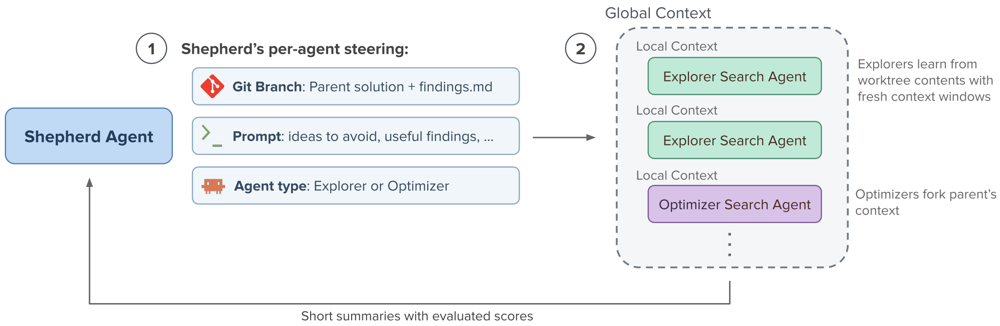
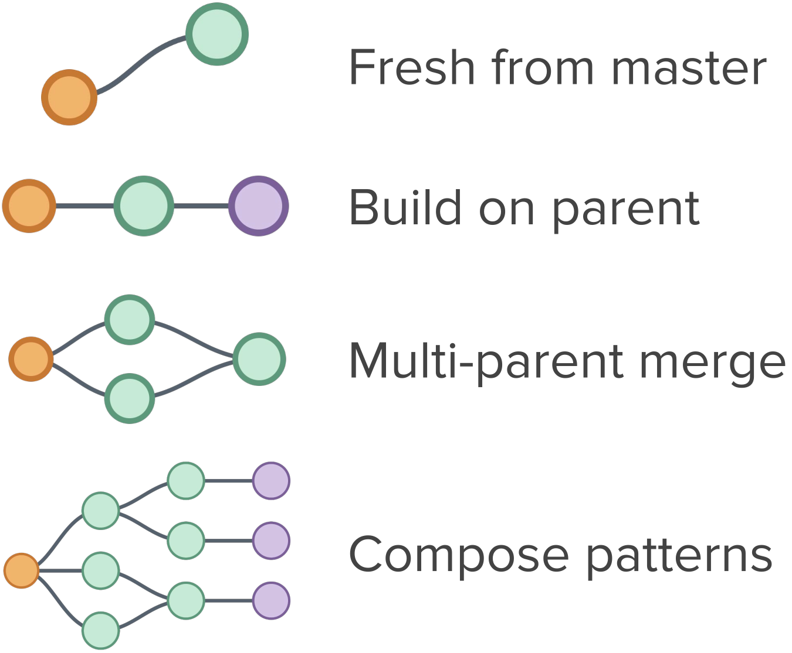
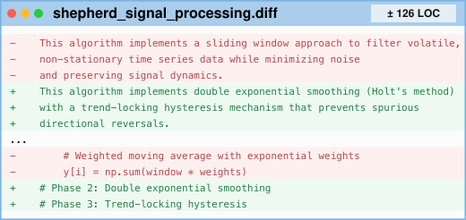
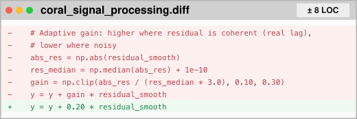

SwarmResearch designs speculative decoding-based implementations.
Nodes represent spawned search agents and their solutions.
Edges indicate the lower node builds on the solution above.
The top node value shows spawn order; the bottom value shows
speedup over vanilla decoding. SwarmResearch explores
diverse approaches over ~11 hours without converging onto
any one approach. On 100 held-out reasoning-intensive tasks
averaged across 5 seeds,
SwarmResearch's achieved mean tok/s is 4.58× faster
than naive vanilla decoding. After ~12 hours,
vanilla autoresearch's [1]
speedup is only 1.80× while CORAL's
[5] is 2.26×. All
methods use Opus 4.8 Claude Code. Details in
case study section.
Autoresearch [1]
demonstrated that coding agents can autonomously climb an
objective to discover state-of-the-art solutions to
open-ended optimization problems. However, long-running
coding agents burn most of their tokens on low-level optimizations
rather than exploring fundamentally
different approaches. This behavior is great for making tons of mirco-optimizations,
but is terrible for exploring higher-level changes.
Why do autoresearchers get stuck in a single approach? Two reasons:
Accumulating context around one approach. Once one approach appears promising, long-running agents tend to proceed with a long-tail of low-level edits on it. Conditioned on this long history of incremental refinements, high-level shifts are unlikely especially since they requires several large program edits to beat the current best.
Only editing one program state. Autoresearch's experimental loop exposes a single program state: all improvements are committed, regressions are reverted, and future search proceeds from the current best implementation. This loop design encourages greedy local search and makes it difficult to maintain competing high-level directions. Ideally, a harness should let search branch naturally: multiple versions of a program should evolve independently when they instantiate different ideas.
SwarmResearch solves these problems in 2 simple ways: 1) subagents with fresh context windows ideate and execute new experiments 2) all major edits have separate git branches. It's implemented as three skills compatible with Claude Code and Codex. Launch up your coding agent and give it a spin! Pretty fun to watch :)
How It Works

The harness has two primary roles: Shepherd Agents and
Search Agents. The Shepherd Agent is the orchestrator.
It spawns and steers waves of concurrent
Search Agents and has access to global context: summaries of all Search Agent
attempts, including their approach and evaluated score.
Search Agents are subagents that come up with a new approach and implement, evaluate, and
iterate on it. Context
separation is designed to preserve diversity among Search
Agents while still giving the Shepherd Agent enough information to
strategically steer the population.
Unlike classic orchestrator-subagent architectures, which partition complex tasks like large-scale code generation across subagents, Shehpherd Agents do not decompose the problem into precise tasks. Their role is to
steer population-level search behavior by initializing and maintaining a diverse population
of ideas, prioritizing Search Agents on promising
ideas, and breaking out of plateaus. Shepherd Agents accomplish these goals with 3 steering mechanisms:

Git Branch.
For every new Search Agent, the Shepherd Agent creates a new git branch and worktree from either the baseline commit, a completed Search Agent’s commit, or a merge of multiple Search Agent commits; each commit includes a solution. Every Search Agent begins by reading and modifying this parent solution in its worktree, so the parent shapes the neighborhood of solutions it explores. Parent selection, through branch setup, lets the Shepherd Agent steer the population's search without prescribing specific ideas. Branches from the minimal baseline encourage new from-scratch exploration, while branches from completed agents can direct effort toward promising or underdeveloped directions. Branching expresses a wide range of search patterns e.g., concurrent Search Agent fan-out around a promising solution, or deep serial chains to persistently build on attempts.
Search agent type.Explorer Search Agents
have fresh context windows and use the content in their
worktree as context. Fresh context windows makes them less anchored to previous work and better suited for trying higher-level changes in approach. Their worktree includes a lineage-local log of attempts findings.md, which Search Agents update at every commit, to avoid repeating their ancestors' mistakes. Optimizer Search Agents inherit their parent's conversation history in addition to the worktree, giving them an accumulating history to complete long-tail refinement like autoresearch successfully does.
Prompts.
Since Search Agents only have local context of their parent,
the Shepherd Agent can share prompts to give
minimal, relevant context or add directions. For
example, if Explorer Agents repeat similar ideas, prompts can
provide a summary of already explored ideas and instruct
them to explore new ideas. Or, a prompt could share complementary findings from other Search
Agents.
Why use an orchestrator at all? We found that multiple agents which instead self-organize through a shared memory tend to all converge onto a single approach. When all agents see that another agent found a stronger solution, they decide to improve the best solution and abandon independent directions. SwarmResearch eliminates this possibility by restricting Search Agent context to their direct lineage. Still, the Shepherd Agent uses its global context to strategically distribute Search Agents across parents and write prompts that selectively pass relevant information to new Search Agents.
Comparison to Baselines
Comparison of SwarmResearch to evolutionary baseline EvoX
[4] and
multi-agent baseline CORAL
[5]. We run each approach once with Opus 4.6 and publicly available implementations. SwarmResearch and
CORAL use Claude Code and run for $50 per task. EvoX is ran for 100 iterations ($23.50 per task average). Bolded means top score among
these methods.
Highlighted in green
means score matches or exceeds state-of-the-art
set by AI systems and human.
Task
SOTA
EvoX
CORAL
SwarmResearch
Math
Circle Packing ↑
2.635983
2.1064
2.635985
2.635996
Signal Processing ↑
0.8229
0.7181
0.7403
0.7970
Erdos Min Overlap ↓
0.380876
0.38195
0.381099
0.381080
MMD-14-3 (Min-Max-3) ↓
4.16578
4.46410
4.16578
4.16584
3rd-Autocorrelation ↓
1.45368
1.46220
1.46233
1.45649
Systems
EPLB ↑
0.1490
0.1443
0.1467
0.1436
LLM-SQL ↑
0.7310
0.7253
0.7195
0.7331
Txn Scheduling ↑
4566.0
4081.6
4201.7
4366.8
Cloudcast ↓
618.4
696.1
618.0
618.0
PRISM ↑
26.26
26.26
26.26
26.26
Heuristics
Territory (AHC008) ↑
3463
1161
1208
1304
Halloween Candy (AHC015) ↑
3506
1985.67
2268
2543
Graphorean (AHC016) ↑
3517
1621
1782
2138
Balancing by Balance (AHC025) ↑
3479
1400
1236
1470
Stack of Boxes (AHC026) ↑
3451
2009.67
2618
1992


Examples of median-sized SwarmResearch and CORAL
diffs for Signal Processing.
SwarmResearch's performance exceeds or matches evolutionary and multi-agent baselines on most open-ended optimization tasks, indicating more effective search of their solution spaces. SwarmResearch exceeds performance of EvoX on 14/15 tasks. It clearly exceeds CORAL on 8/15 tasks and performs similarly on 5/15 tasks. Differences between
CORAL and SwarmResearch on mathematical optimization tasks Circle Packing, Erdos Min Overlap, and MMD-14-3 are
small. They could be reduced by further solution polishing
under higher budgets.
SwarmResearch's experiments test higher-level changes than the baselines.
For the average attempt and median task, SwarmResearch changes
3.2× more lines of code than CORAL and 1.7× more than
EvoX. For example, in Signal
Processing, SwarmResearch's median-sized diff tries a
different type of signal processing algorithm while CORAL's makes a targeted change to
how signal corrections are computed. In
AHC016, a median-sized diff from CORAL involves tuning thresholds,
while a median-sized diff from SwarmResearch redesigns the solver into
different modes applied under different conditions. On most
tasks, higher-level experiments mean SwarmResearch discovers a
better solution. However, within the budget, CORAL better
exploited strong approaches and discovered meaningful
low-level changes on the systems task EPLB and heuristics
task AHC026.
Case Study: Approximate Speculative Decoding
The evolution graph at the start of the blog visualizes SwarmResearch's search trajectory on
the task.
Task & Setup. Speculative decoding
techniques are commonly lossless
[6],
[3],
[7], where the target model verifies
every draft token to ensure the output exactly matches what the
target model would have generated. However, strict
per-token verification may not be necessary for preserving
downstream task accuracy, and trading some accuracy for higher
speed may be desirable
[8],
[9],
[10]. To explore this direction with
SwarmResearch, our fast evaluator includes 30 total
reasoning-intensive tasks from LiveCodeBench v6, AIME 2026,
GPQA Diamond, and HLE-MCQ
[11],
[12],
[13],
[14]. The objective of SwarmResearch is to
maximize token throughput while preserving benchmark accuracy.
The baseline is a basic single-file, lossless speculative
decoding implementation using rejection sampling, which is
1.68× faster than vanilla decoding. SwarmResearch uses
Claude Code Opus 4.8. Before solution generation, an initial
SwarmResearch run analyses the baseline from different angles
without generating solutions and its findings are included in
the solution generation run worktrees.
SwarmResearch's Solutions. On 100 held-out
tasks, averaged across 5 seeds, SwarmResearch achieves a mean
tok/s that is 4.58× faster than naive vanilla decoding,
with 60.6% accuracy, while vanilla decoding's baseline accuracy
is 65.8%. Vanilla autoresearch
[1] achieves 1.80×
speedup and CORAL [5] achieves
2.26× speedup, with accuracies of 65.8% and 58.4%
respectively. These methods generated solutions for ~12 hours.
For SwarmResearch, accuracy loss is due to more
responses exceeding our evaluator's 16,384-token limit, despite
some reasoning chains including the correct answer.
The largest throughput gains with minimal accuracy loss come
from systems optimizations. The best-performing optimization is
batching the target forward pass across multiple benchmark
sequences. To preserve accuracy for the evaluated sampling seed,
SwarmResearch uses independent RNG streams across batches for
sampling independence. Autoresearch and CORAL's solutions do not
use batching. The figure above shows SwarmResearch's 23rd
completed Search Agent applied batching on a fresh branch from
main, even after significant serial exploration on approaches
like relaxed acceptance conditions. Additionally,
SwarmResearch's best solution optimizes the construction of
token distributions for rejection sampling by using a persistent
thread pool, top-k bounded distributions, and parallel
distribution construction during batching. The best solution
additionally adapts the number of target-model experts. The
baseline uses k=8 experts throughout, but SwarmResearch
finds that k=8 is only necessary during prefill. For
target-token generation, SwarmResearch uses k=4 for
most tokens and increases to k=5 when the previous
verification round's mean top-1 probability is less than 0.7.
Unlike batching and distribution-construction optimizations,
adaptive MoE expert count is not strictly lossless with respect
to the original target model.
Existing inference engines
[15] already implement batching for
speculative decoding and optimized token-distribution
processing, while adaptive expert count has been explored
outside speculative decoding
[16]. Other than systems optimizations,
SwarmResearch explores decoding techniques that trade speed and
accuracy, including relaxed draft acceptance and skipping
verification for confident tokens. Prior work explores related
techniques [8],
[9],
[10].
Risks and Challenges. SwarmResearch's novel
attempts, not in existing decoding literature as far as we know,
performed poorly and we did not find them reasonable. For
example, one attempt was "comonotone sampling": during rejection
sampling for a draft span, it sampled a single shared acceptance
threshold for all tokens in the span, rather than sampling
independent thresholds per token as is typical. The model
produced a run with improved performance and reasoned the change
increased the acceptance rate. However, after we generated
acceptance rate data and evaluated additional seeds, we found its
claims were unsubstantiated. SwarmResearch generates a high
throughput of ideas and experiments and careful review requires
high effort. Without careful review, users may be convinced by
low-quality approaches, where proposals and justifications seem
attractive at first glance despite being incorrect.
Xia, Heming, Zhe Yang, Qingxiu Dong, Peiyi Wang,
Yongqi Li, Tao Ge, Tianyu Liu, Wenjie Li, and
Zhifang Sui. 2024. “Unlocking Efficiency in Large
Language Model Inference: A Comprehensive Survey of
Speculative Decoding.” Findings of ACL.
ACL Anthology.
Hu, Yuxuan, Ke Wang, Xiaokang Zhang, Fanjin Zhang,
Cuiping Li, Hong Chen, and Jing Zhang. 2025. “SAM
Decoding: Speculative Decoding via Suffix
Automaton.” ACL.
Liu, Shu, Shubham Agarwal, Monishwaran Maheswaran,
Mert Cemri, Zhifei Li, Qiuyang Mang, Ashwin Naren,
Ethan Boneh, Audrey Cheng, Melissa Z. Pan, and
others. 2026. “EvoX: Meta-Evolution for Automated
Discovery.” arXiv preprint arXiv:2602.23413.
Qu, Ao, Han Zheng, Zijian Zhou, Yihao Yan, Yihong
Tang, Shao Yong Ong, Fenglu Hong, Kaichen Zhou,
Chonghe Jiang, Minwei Kong, Jiacheng Zhu, Xuan
Jiang, Sirui Li, Cathy Wu, Bryan Kian Hsiang Low,
Jinhua Zhao, and Paul Pu Liang. 2026. “CORAL:
Towards Autonomous Multi-Agent Evolution for
Open-Ended Discovery.”
arXiv preprint arXiv:2604.01658.
arXiv.
Leviathan, Yaniv, Matan Kalman, and Yossi Matias.
2023. “Fast Inference from Transformers via
Speculative Decoding.” ICML.
Li, Yuhui, Fangyun Wei, Chao Zhang, and Hongyang
Zhang. 2025. “EAGLE-3: Scaling up Inference
Acceleration of Large Language Models via
Training-Time Test.”
arXiv preprint arXiv:2503.01840.
arXiv.
Kim, Sehoon, Karttikeya Mangalam, Suhong Moon,
Jitendra Malik, Michael W. Mahoney, Amir Gholami,
and Kurt Keutzer. 2023. “Speculative Decoding with
Big Little Decoder.”
Advances in Neural Information Processing Systems.
NeurIPS.
Huang, Kaixuan, Xudong Guo, and Mengdi Wang. 2025.
“SpecDec++: Boosting Speculative Decoding via
Adaptive Candidate Lengths.”
Proceedings of the Second Conference on Language Modeling.
OpenReview.
Lu, Kuan-Wei, Ding-Yong Hong, Pangfeng Liu, and
Jan-Jan Wu. 2025. “AdaSD: Adaptive Speculative
Decoding for Efficient Language Model Inference.”
arXiv preprint arXiv:2512.11280.
arXiv.
Jain, Naman, King Han, Alex Gu, Wen-Ding Li,
Fanjia Yan, Tianjun Zhang, Sida Wang, Armando
Solar-Lezama, Koushik Sen, and Ion Stoica. 2024.
“LiveCodeBench: Holistic and Contamination Free
Evaluation of Large Language Models for Code.”
arXiv preprint arXiv:2403.07974.
arXiv.
MathArena. 2026. “AIME 2026.”
Hugging Face dataset.
Hugging Face.
Rein, David, Betty Li Hou, Asa Cooper Stickland,
Jackson Petty, Richard Yuanzhe Pang, Julien Dirani,
Julian Michael, and Samuel R. Bowman. 2023. “GPQA:
A Graduate-Level Google-Proof Q&A Benchmark.”
arXiv preprint arXiv:2311.12022.
arXiv.
Phan, Long, Alice Gatti, Ziwen Han, Nathaniel Li,
Josephina Hu, Hugh Zhang, Sarah Zhang, Michael
Chen, Michael Ong, Aarohi Srivastava, and others.
2025. “Humanity's Last Exam.”
arXiv preprint arXiv:2501.14249.
arXiv.
Zheng, Lianmin, Liangsheng Yin, Zhiqiang Xie,
Chuyue Sun, Jeff Huang, Cody Hao Yu, Shiyi Cao,
Christos Kozyrakis, Ion Stoica, Joseph E. Gonzalez,
Clark Barrett, and Ying Sheng. 2024. “SGLang:
Efficient Execution of Structured Language Model
Programs.”
Advances in Neural Information Processing Systems.
NeurIPS.
Balsamo, Gabriele. 2026. “Entropy-Guided Dynamic
Expert Selection in Mixture-of-Experts Models.”
Preprint, under review.
Paper.